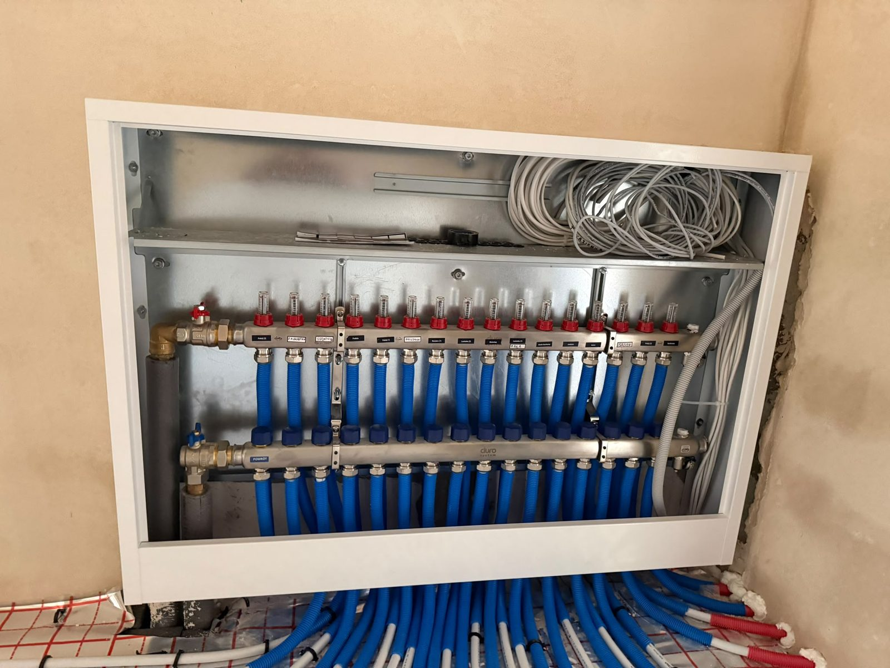

20 lat doświadczenia w branży. Wykonanie od A do Z, w ustalonym terminie i za cenę, która nie rośnie po drodze.
Zadzwoń teraz +48 883 602 422Opisują Państwo zakres prac w swoim domu, a my wspólnie ustalamy termin spotkania na miejscu.
Cena ustalona na podstawie wyceny jest ceną ostateczną, bez ukrytych kosztów.
Wykonujemy instalacje według wcześniejszych ustaleń, uruchamiamy, konfigurujemy, regulujemy, tłumaczymy zasadę działania oraz uczymy użytkowania instalacji.
Na wykonaną instalację otrzymują Państwo gwarancję, protokoły z prób szczelności oraz stały kontakt z nami w razie problemów.
Zakres usług, jakie oferujemy, znajdą Państwo poniżej.
Montujemy i serwisujemy kotły gazowe oraz pompy ciepła Vaillant. Prowadzimy również sprzedaż obu typów urządzeń.
Zobacz zakładkę Partner →Kotłownie, rozdzielacze, ogrzewanie podłogowe i podejścia wod-kan. Zdjęcia z realnych budów, bez upiększania.


Pracujemy w Chojnicach i okolicy, a przy większych inwestycjach dojeżdżamy w promieniu 100 km. Nie wiedzą Państwo, czy dojedziemy? Wystarczy jeden telefon.
Zakres prac wyceniamy po obejrzeniu miejsca. Cena ustalona na podstawie wyceny jest ceną ostateczną, bez ukrytych kosztów.
Nie. Przyjazd i wycena są bezpłatne i do niczego nie zobowiązują.
Termin ustalamy przy wycenie i trzymamy się go. Awarie traktujemy priorytetowo i przestawiamy grafik.
Uruchomioną i wyregulowaną instalację, przeszkolenie z obsługi, gwarancję, protokoły z prób szczelności oraz stały kontakt z nami.
Pracujemy w Chojnicach, Sępólnie Krajeńskim, Kamieniu Krajeńskim, Tucholi, Człuchowie i dalej, w promieniu 100 km.
Tak. Mamy autoryzację Vaillant na montaż i serwis kotłów gazowych oraz pomp ciepła. Szczegóły i certyfikaty znajdą Państwo w zakładce Partner.
Tak, na firmę albo na osobę prywatną. Dokument wystawiamy od razu po zakończeniu prac.
Zadzwońcie lub napiszcie. Przyjedziemy, obejrzymy zakres prac i podamy ostateczną cenę.